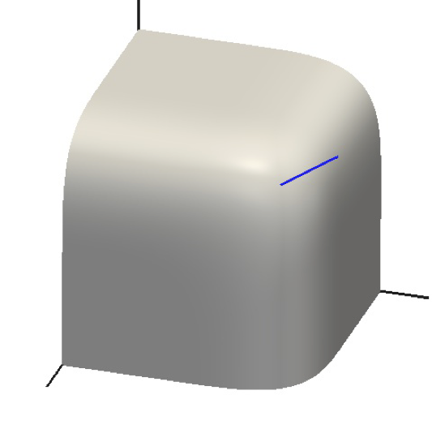
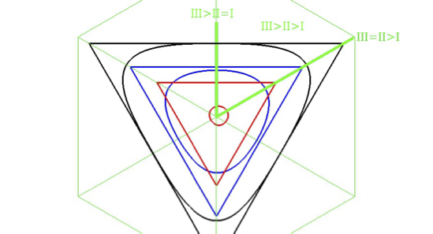

MultiParameterPlasticityStressUpdate
MultiParameterPlasticityStressUpdate is a base class to the following stress update materials:
Yield functions smoothing
The three yield functions shown in Tensile Stress Update are smoothed in the MultiParameterPlasticityStressUpdate class.
An example is shown Figure 1 and Figure 2. Figure 2 shows slices of the yield surface at three values of the mean stress, and the triangular-pyramid nature of the yield surface is evident. The slices are taken near the tip region only, to highlight: (1) the smoothing; (2) that the smoothing is unsymmetric.
The unsymmetric nature of the yield surface only occurs near the tip region where the smoothing mixes the three yield surfaces. For instance, the black line in Figure 2 is symmetric, while the blue and red lines are unsymmetric. The amount of asymmetry is small, but it is evident that the red curve is not concentric with the remainder of the curves shown in Figure 2. The order of the yield functions has been chosen so that the curves intersect the line at , but not on the line near the pyramid's tip. The asymmetry does not affect MOOSE's convergence, and of course it is physically irrelevant (since there is no one correct'' smoothed yield surface).

The unsmoothed yield surface defined by the yield function equations is a triangular pyramid

Figure 1: A smoothed version of the yield surface.
The principal stress directions are shown with black lines, and the mean stress direction is shown with a blue line. The three planes extend infinitely (there is no base to the triangular pyramid) but these pictures show the tip region only.

Figure 2: Slices of the unsmoothed and smoothed yield functions at various value of mean stress.
In this example , the smoothing tolerance is 0.5, and the values of mean stress shown are: black, 0.7; blue, 0.8, red 0.85. An unusually large amount of smoothing has been used here to highlight various features: in real simulations users are encouraged to use smoothing approximately . The whole octahedral plane is shown in this figure, but only one sextant is physical, which is indicated by the solid green lines.
Flow rules and hardening
This plasticity is associative: the flow potential is
Here smoothing indicates the smoothing mentioned in the previous section.
The flow rules are
(1)
where and
In this equation is the elasticity tensor.
An assumption that is made is that is independent of the stress parameters, and the internal variables. In this case,
Special precautions are taken when the eigenvalues are equal, as described in the documentation for RankTwoTensor.
where is the eigenvector corresponding to the eigenvalue (of the stress tensor) and there is no sum over on the right-hand side. Recall that the eigenvectors are fixed during the return-map process, so the RHS is fixed, meaning that is indeed independent of the stress parameters. Also recall that the eigenvectors induce a rotation (to the principal-stress frame), so assuming that is isotropic
The assumption of isotropy is appropriate for this type of isotropic plasticity.
It is assumed that there is just one internal parameter, , and that it is defined by
during the return-map process. The tensile strength is a function of this single internal parameter
Return-map considerations
Unknowns and the convergence criterion
The return-map problem involves solving the four equations: (smoothed yield function should be zero) and the flow Eq. (1). The unknowns are the 3 stress parameters and the plasticity multiplier . Actually, to make the units consistent the algorithm uses instead of simply . Convergence is deemed to be achieved when the sum of squares of the residuals of these 4 equations is less than a user-defined tolerance.
Iterative procedure and initial guesses
A Newton-Raphson process is used, along with a cubic line-search. The process may be initialized with the solution that is correct for perfect plasticity (no hardening) and no smoothing, if the user desires. Smoothing adds nonlinearities, so this initial guess will not always be the exact answer. For hardening, it is not always advantageous to initialize the Newton-Raphson process in this way, as the yield surfaces can move dramatically during the return process.
Sub-stepping the strain increments
Because of the difficulties encountered during the Newton-Raphson process during rapidly hardening/softening moduli, it is possible to subdivide the applied strain increment, , into smaller sub-steps, and do multiple return-map processes. The final returned configuration may then be dependent on the number of sub-steps. While this is simply illustrating the non-uniqueness of plasticity problems, it has been observed not to adversely affect MOOSE's nonlinear convergence as some residual calculations will take more sub-steps than other residual calculations: in effect this is reducing the accuracy of the Jacobian.
The consistent tangent operator
MOOSE's Jacobian depends on the derivative
The quantity is called the consistent tangent operator. For pure elasticity it is simply the elastic tensor, , but it is more complicated for plasticity. Note that a small simply changes , so is capturing the change of the returned stress () with respect to a change in the trial stress (). In formulae:
In the case at hand,
In this formula is the returned stress, are the returned stress parameters (eigenvalues), and is the rotation matrix, defined through the eigenvectors, () of the trial stress:
The three eigenvectors remain unchanged during the return-map process. However, of course they change under a change in . The relevant formulae are
On the RHS of these equations there is no sum over .
The final piece of information is
MultiParameterPlasticityStressUpdate computes this after each Newton step, for any arbitrary plasticity model.
The nontrivial part to the consistent tangent operator is therefore
All the components of this equation have been provided above.